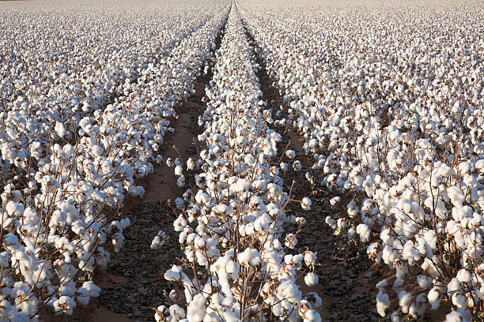

Cotton: The Essential Fiber Crop

Uses of Cotton
Cotton is a crucial crop with various uses:
- Textile Production: Cotton fibers are spun into yarn and used to make fabrics for clothing, linens, and more.
- Industrial Uses: Cottonseed oil is used in food products, while the cotton plant itself can be used for feed and fuel.
- Medical Applications: Cotton is used in medical supplies like bandages, gauze, and cotton swabs.
Types of Cotton
Different types of cotton are cultivated based on fiber quality and use:
- Upland Cotton: The most commonly grown type, used in everyday textiles.
- Pima Cotton: Known for its softness and strength, often used in luxury fabrics.
- Egyptian Cotton: Highly prized for its long fibers, resulting in soft and durable fabrics.
Growth Requirements for Cotton
Cotton requires specific conditions to grow optimally:
- Climate: Thrives in warm climates with plenty of sunshine.
- Soil: Grows best in well-drained, fertile soils with a neutral pH.
- Water: Requires consistent irrigation, especially in arid regions.
Natural Fertilizers for Cotton
Natural fertilizers improve soil health for cotton cultivation:
- Compost: Adds essential nutrients to the soil, enhancing soil fertility.
- Manure: Increases organic matter and improves soil structure.
- Green Manure: Helps add nitrogen and other nutrients to the soil.
Pest and Disease Prevention
Common practices to protect cotton crops from pests and diseases:
- Crop Rotation: Helps reduce soil-borne pests and diseases.
- Use of Resistant Varieties: Planting pest-resistant cotton varieties minimizes crop damage.
- Integrated Pest Management (IPM): Combines biological, cultural, and mechanical practices to control pests.
Benefits of Cotton
- Biodegradable: Cotton is a natural fiber that decomposes over time, reducing environmental impact.
- Soft and Comfortable: Widely valued for its comfort in textiles.
- Renewable Resource: Cotton is a renewable crop, harvested each growing season.
Frequently Asked Questions
1. How much water does cotton need?
Cotton requires a significant amount of water, especially in arid regions, where irrigation is essential.
2. What are the main pests that affect cotton?
Cotton is susceptible to pests such as the bollworm, aphids, and whiteflies, which can reduce crop yields if not managed properly.
Back to Crop List